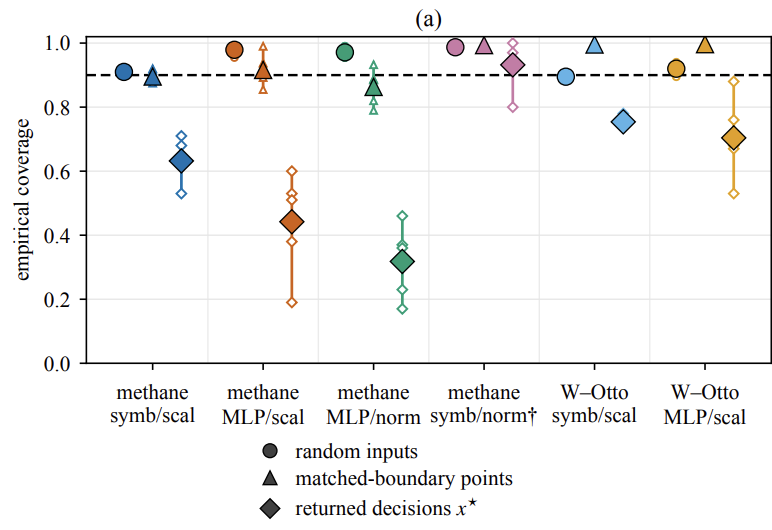
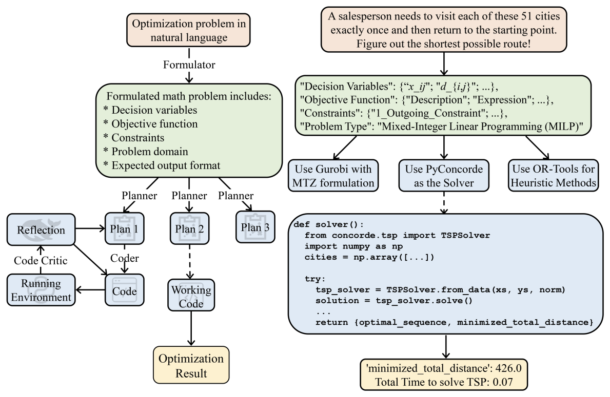
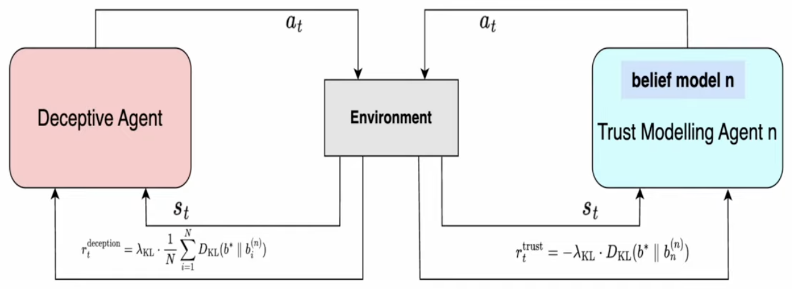
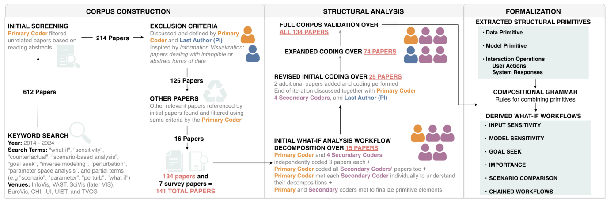
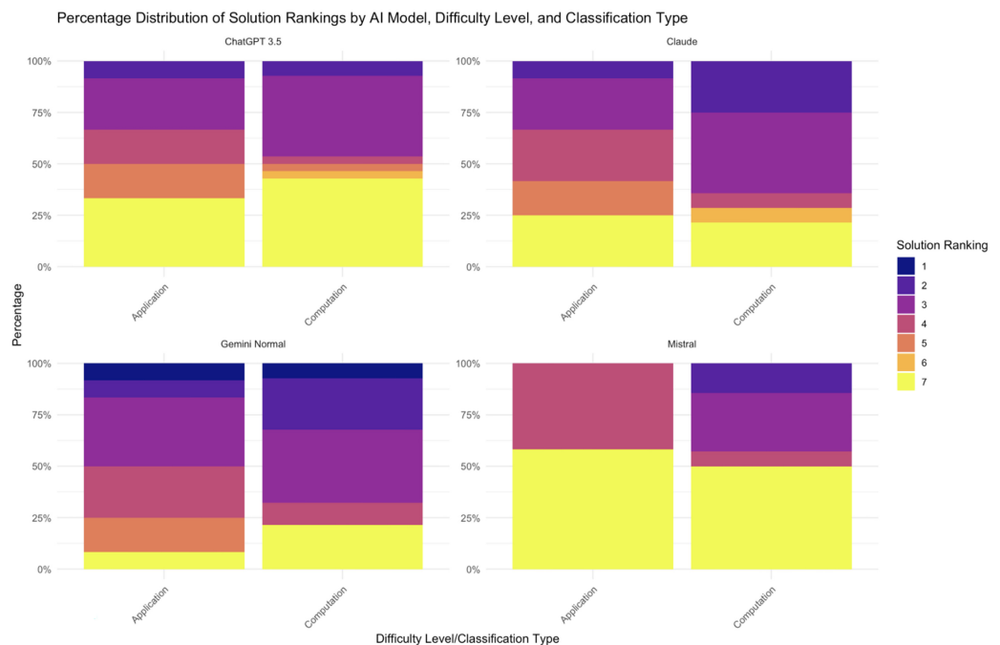

Selected-Risk Calibration for Feasibility at Returned Decisions
Raghav Thind, Youran Sun, Ling Liang, Haizhao Yang
arXiv, 2026
I'm a final-year Computer Science student at the University of Maryland, graduating in May 2027. I work on making AI models reason more reliably: how vision-language models ground their reasoning in what they see, how LLM agents can solve real-world optimization problems, and how to get agents to trust or deceive other agents in mixed-motive settings.
I've done research at EPFL's Machine Learning for Biomedicine Lab as a Summer@EPFL fellow, at Carnegie Mellon's Robotics Institute as a RISS scholar, and at UMIACS here at Maryland.





If any of this overlaps with what you're working on, feel free to email me at rthind (at) terpmail.umd.edu.